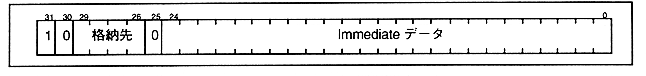
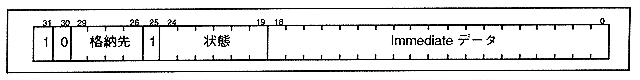

Load Immediate command transfers immediate data to the storage location. The unconditional transfer follows the format shown in Figure 4.6, and the conditional transfer follows the format shown in Figure 4.7. The instruction details are shown from the next page.
Figure 4.6 Load Immediate Instruction Format 1 (Unconditional Transfer)

Figure 4.7 Load Immediate Instruction Format 2 (Conditional Transfer)
